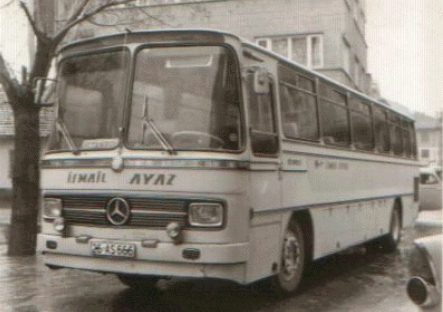
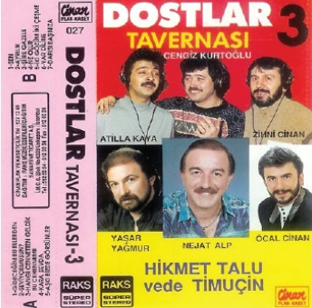
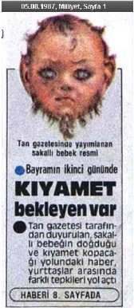

Seksenli yıllarda meydana gelen, dünya ve özelde Türkiye’yi ilgilendiren pek çok olay vardır. Elbette her devirde büyük olaylar olacaktır. Ama burada daha ziyade bizi ilgilendiren ve aklımızda, yüreğimizde yer eden ve yara açanların bazılarını anlatmayı uygun buluyoruz.
Çernobil Kazası: 1986 yılında ülkemizin daha ziyade kuzey bölgelerini etkileyen bir kazaya tanık olmuştu dünya. Çernobil Nükleer Reaktörü’nde bir patlama meydana gelmişti. Bunun sonucunda radyoaktif serpinti çok geniş bir alana yayıldı. Sadece komşu ilkeleri değil görece uzak Avrupa'daki pek çok ülkeyi de doğrudan etkilediği sonraki yıllarda ortaya çıkmıştı.
Independenta: Seksenli yıllara ramak kala, İstanbul Boğazı tehlikeli kazalarından birini yaşamış, ham petrol yüklü Romanya bandıralı bir yük gemisi ile Yunan bandıralı bir başka gemi, Haydarpaşa yakınlarında çarpışmıştılar. Independenta adlı bu yük gemisinde çıkan yangın aylarca sürmüş, İstanbul halkı çok korkmuş, patlama sonucu çıkan yangın ve enkaz kaldırma çalışmaları çok uzun zaman almıştı.
Break Dans: Bu bir dönemin en yaygın dans figürlerinin olduğu, insanların çılgınca yolda, bayırda tirtir titrediği, yerlerde sırtüstü, kafa üstü döndüğü, balık gibi yerlerde çırpınılıp, göbek üstünde hareket edilmeye çalışıldığı, bir yaşam biçimi haline getirilen dans türüdür.
Doğru düzgün yürürken birden felç gelmiş gibi durur, “Ver bir elektrik, ver, ver,” diye bağırır, arkadaşın eline dokununca vücudunu dalgalandırırdın. Dalga bittiğinde karşındakinin yanağına bir tokat atmak, olayı renklendirirdi.
O zamanların doğum günü partilerinde bu dansı yapan insanlar topluluktan saygı görürdü. Çok geyikler yapıldı, çok konuşuldu. “Len büyüyünce börekçi mi olacan?” diye sorulara maruz kalırdınız. Gençler evlerinden kaçardı brekçi olmak için.
Çok fazla bilmediğim konuya çok vakıf olmadığım için söylüyorum bunları. Bu dansa duyarlı insanlar, bu yazılanlara da belki kızabilir: “Senin dediğin elektrik bugi, karıştırıyorsun” falan diyen de çıkabilir. Heyhat, ama komikti işte! O dediğiniz de komik, iyi, break dance da komik.
Challenger’in İnfilakı: Amerika’nın Florida Kennedy Uzay Merkezi’nden havalanan ve fırlatıldıktan yetmiş üç saniye sonra infilak eden Challenger Uzay Mekiği, içindeki yedi mürettebatının ölümüyle o yıllara damgasını vurmuştu. Televizyonda infilak sahnesi defalarca yayınlanmış, tüm dünyada milyarlarca kişi bu patlamayı izlemişlerdi.
O zamanlar Amerika Başkanı olan Ronald Reagan açıklamada bulunmuş, bu olay uzay araştırmalarında yaşanabilecek olağan durumlardan biri sayılmıştı. Bu olaydan sonra, araştırmalara uzun bir süre ara verilmişti.
Çöp Yığınları: Belediye hizmetleri, ağır aksak giderken, bir ara İstanbul şehrinin çöpçüleri greve girmiştiler. Belediye ile yapılan pazarlıklar uzun sürmüş, zaten yetersiz olan çöp toplama işleri bu grev dolayısıyla iyice kötüleşmişti.
İstanbul halkı, bu çöp yığınlarının görüntüsünden ve özellikle de kokusundan yılmıştı. Günlerce süren bu eylem, pazarlıkların anlaşma ile neticelenmesiyle son bulmuş, İstanbul ve İstanbullu rahat bir nefes almıştır.
Dünyanın gözü üzerinde olan bu güzide ve tarihin en önemli şehirlerinden biri olan koca şehre bu görüntüler hiç yakışmamış, o zamanın görev yapan insanlarına ve bu işte sorumlu olan herkese lanetler okunmuştu. (ki halen aklıma geldiğinde okumaktayım,)
Eurovision Şarkı Yarışması: Seksenli yılların en önemli olaylarından biri, hiç şüphesiz bu yarışmadır. Millet olarak, sanki bir futbol maçı ya da güreş müsabakası seyreder gibi ekranların başına geçer, bu yarışmadaki şarkıları dinler, sıranın bize gelmesini heyecanla beklerdik.
Yarışma öncesinde hazırlıkları takip eder, bu sefer şansımızı çevireceğimizi düşlerdik. Tabii evdeki hesap hiçbir zaman çarşıya uymaz ve biz yine boynumuzu büküp, yine hakkımızın yendiğini düşünürdük.
Sonra, neden başarısız olduğumuzu tartışmaya başlardık. Kimi, solistimizin giyim kuşamına kusur bulurken, kimi o günkü performansına kızardı. Bazıları, bestenin ve sözlerin yabancı kulaklara hitap etmediğinden dem vururken, bazısı olayı sadece Türk düşmanlığına bağlardı.
İlk şarkımız Semiha Yankı tarafından seslendirilen “Seninle Bir Dakika” ile sonuncu’ olup, devamında nasıl olsa yine başarısız sonuçlar alırız diyerek, bundan sonraki iki sene yarışmaya katılmadık.
1978 yılında yine başarısızlık geldi. Sondan ikinciydik.
Bu işler böyle olmuyor demek ki diyerek, Türkiye’de müzik hayatının doruklarını yaşayan ve yurtdışı deneyimi de olan Ajda Pekkan bu göreve layık görülerek, eleme yapılmadan seçildi. Ismarlanan şarkılar arasında, o zamanın petrol krizine gönderme yapan sevimli sözleri olan “Petr-oil” şarkısı manidar bulundu ve esprili üslubuyla dikkat çekeceği düşünülerek, yarışmaya bu şarkıyla katıldık. Kıvrak ritmi ile bizim dilimize yerleşen bu şarkı, yabancılar tarafından beğenilmedi ve biz yine az puanla sondan dördüncüydük.
Sonraki yıllar bu başarısızlık devam ederken, sözlerimiz ve müziğimizin yabancılar için uygun olmadığına, bu yüzden onlara hitap eden bir şarkı yaparsak başarılı olacağımıza dair inanç içine girdik. Buna dayanarak “Opera” adlı şarkıyla katıldık yarışmaya.
Buradaki amacımız, batılılara operanın ne güzel bir şey olduğunu ve ünlü operaları ve operacıları hatırlatmaktı. Meğerse onlar bizim kadar hatırlamak istemezlermiş.
Türkiye o tarihe kadar yapılan yarışmaların en kötü derecesini alarak, “sıfır” puanla sonuncu oldu. Rahmetli Çetin Alp, bunalımlara girdi. İnsanlar bu şarkıyla yıllarca dalga geçti.
Eurovision belki hiçbir ülkenin vermediği değeri bizden görmüştü, ama o bize hep ihanet etti. Mahzarları, Fuatları, Özkanları, Ajdaları, Necoları, Nükhetleri, Beşyıl Önceleri Sonraları, Çetinleri Alpleri ve daha nicesini yedi bitirdi. Bu profesyonel müzisyenlere başarısızlığı tattırdı. Ancak Türkiye elemeleri neticesinde bir sürü insanı tanımış, kazanmış olduk. Neyse ki nihayetinde Sertap Erener birincilik aldı da biraz kendimize geldik. Moralimiz düzeldi.
Otobüs Yolculukları: En iyi otobüsün 302 olduğu zamanlar ve biraz daha öncesinden bahsetmek istiyorum.
Ailecek yola çıkılırdı. Öyle herkesin şimdiki gibi özel araçlarıyla uzun yolculuklar yapamadığı zamanlardı. Teknoloji bu kadar gelişmemiş, arabalar gürültülü idi. Yazın sıcaktan kavrulur, kışınsa soğuktan donardık.
Otobüsler biraz da yollar bozuk olduğu için mecburen daha yavaş giderken, yolları o koca kamyonlarla paylaşmak zorunda kalırdık. Bolu Dağı efsanesi şimdikinden çok daha fazlaca idi, yok uçurumdan düşen araçlar, yok iki araç yan yana geçemezler, biri durur diğerine yol verir gibi konuşmalar olurdu.
Otobüslerin içi bir felaketti o zamanlar, sigara kokusundan burnunuzun direği sızlar, içilen sigaradan göz gözü görmezdi. Demek ki o vakitler sigara bu kadar zararlı değildi.
Ön koltuk ve tavan arasındaki bölmeler fileli idi, sular plastik kutularda değil, cam şişelerde gelirdi. Hemen herkes, yolculukta aç kalmasın diye yanma yolluk alır, öyle çıkardı.
Orhan Gencebay, Ferdi Tayfur kasetlerini dinlemekten bıkabilirdiniz. Bir ara içiniz geçer, dalarsınız. Uyandığınızda “Beni böyle sev, seveceksen dın dın dıı olduğum gibi...” içiniz geçer yine uyanırsınız bıraktığınız yerden şarkı devam ediyordur. Şaşırırsınız, ama tur bindirdiğinizden haberiniz yoktur. (O aralar bir de Otoban Serisi 1,2,3.. gibi bir şeyler çıkmıştı. Dönemin en tutulan şarkıları olur, aralarda da bir iki abuk fıkra anlatılırdı. Pek tuttuydu zamanında,)

İnsaflı bir şoföre rastlarsanız, TRT açılırdı da “Yurttan Sesler”i dinlerdiniz. Ne çok yolculuk yaptık, ne çok türkü öğrendim o yollarda.
Mutlaka her yolcu otobüsünde durmadan ağlayan, kadrolu en az bir bebek bulunurdu. Küçük çocuklar olurdu, mola yerine yaklaşıp da anons yapıldığında, uyku ile uyanıklık arasında, “annnnerdeyisss, yaaa ıhhıımmmisit, uymısiiieehğmm, fis, tis, tis,” derken, anne, uykudan yeni uyandığı için çocuğun sesinin yüksekliğinden duyduğu mahcup edayla, fısır, fısır ona cevap verirdi.
Mola yerine ulaşıldığında, şoför el frenini pompalayarak çekerken, muavin: “Şu anda bilmem ne tesislerine gelmiş bulunuyoruz. Molamız yarım saattir. Çaylar şirkettendir,” diye seslenirdi. Şoför, ağır adımlarla lokantanın kendilerine ayrılan bölümüne doğru yürürken pek havalı olurdu. Muavinse yanında oturur, uykulu gözlerle etrafa bakardı. Sizse sürekli oturmuş olmaktan dolayı ağrıyan vücudunuzu o serin havada gererken, sarı botlu, fırça üzerine hortum bağlamış adamın sıçratacağı sulardan korunmaya çalışırdınız.
Acı çaya bol şeker atıp tatlandırmaya çalışırken, bir bakarsınız süre dolardı.
Bundan sonra kadın, erkek fark etmez, ne dediği anlaşılmayan bir sesle anons gelirdi: “saaeyyııin yöolculeaar işsteaanbulldan geliypşs esssskişşeeeerr issttikametineeah gidennn daodaayylaerrr firrmasıiynaaaaiyytt...” apar topar kalkar, o sigara kokulu otobüse yeniden dönüp koltukların arasından şaşırmadan kendi yerinize oturmaya çalışırdınız.
Topkapı Garajı: Nice eski filmlerin “Sana geldim İstanbul,”anlayışının başlangıç ya da bitiş noktasıdır burası. Kendine ait bir anlayışı, havası vardır. Karmakarışık bir yapı hakimdir ortama. Çığırtkanların sesleri daha ne olduğunu bile anlamadan öyle bir sarardı ki benliğinizi gelen nereden geldiğini gidecek olansa nereye gideceğini şaşırabilirdi. İstanbul’un merkezi burasıydı. Trafik haliyle karışıktı. Yüzlerce demek belki abartılı olabilir, ama çok sayıda firmanın çalışanları oraya gidenlerin dünyasını şaşırtabilirdi.
Burasından başka bir de Haydarpaşa Garı vardır ki, yukarıda değindiğim gibi “Taşı toprağı altın,” olan İstanbul burada da kendisini hissettirirdi. O yıllarda göç etkisiyle çekilen filmlerin bir karesinde mutlaka buradan bir sahne olurdu.
Taverna Müziği: “Hoş geldiniz Ahmet Bey, hoş geldiniz Necla Hanım, hep beraber sallayalım,” gibi, abuk sabuk şarkı arası girişleri olan, insanları eğlendirmek için ne yapacaklarını şaşıran, ağırlıklı olarak kısık sesli ve sakallı olan bir tür! Piyanist Şantör olarak adlandırılmış, bir dönem eğlence sektörünün en önde gelen ve değişmez isimleri olmuşlardır.
Cengiz Kurtoğlu, Nejat Alp, Arif Susam, Atilla Kaya, Tacettin Aktaş, Zihni Cinan, Metin Kaya gibi isimlerin başını çektiği bu ekol, yıllara damgasını vurmuş olmakla birlikte, kısık olduğu için bir süre sonra seslerini kaybetmişler bir daha da kaset çıkaramamışlardır. Sesleri daha gür olanlarsa işlerine devam etmiştir.

İstanbul gecelerinde gezintiye çıkanlar, Tarabya’da arabayla ağır ağır yol alırken, yan yana dizilmiş eğlence mekânlarında, sanki televizyonda kanal degiştiriyormuş hissi uyandıran bir şekilde bu arkadaşlara rastlayabilmektedir.
Ben bu müzik tarzından ve de eğlence anlayışından hiçbir zaman hoşlanmadım. “E! o zaman bu isimleri nereden biliyorsun?” derseniz, yakın arkadaşlarımdan biri bu yukarıda adı geçen insanların kasetlerini alır, dinlerdi. Bu kasetlerden birinin adı, “Dostlar Tavernasında Krallar El Ele”dir. (Bir rakamı da vardı, ama onu hatırlamıyorum,) Burada beni en çok eğlendiren bir resimden bahsetmek isterim. Kaset, Zihni Cinan, Atilla Kaya, Arif Susam ve biri daha vardı adını hatırlayamadığım, bu insanlar tarafından yapılmıştı. Kaset üzerindeki resimde, bir kısmı gözü kapalı, ya da başka tarafa bakarken çıkmışlardı. Bu derece acemice yapılan iş ve o görüntü aklımdan çıkmazdı. O arkadaşıma her gidişimde bu kaseti elime alır, güler dururdum. Ne kadar hoşuma gitmiş ki, aradan yıllar geçmesine rağmen aklımdan çıkmamış ve şu satırları doldurmama vesile oluyor.
Bu arada bir not: Resimdekilerden biri hariç, diğerleri hep sakallıydı.
Berlin Duvarı: Utanç Duvarı olarak da adlandırılan bu duvarın yıkılışı, bir dönemin kapanmasını temsil eder. 1960’lı yılların başında kurulan bu set, Batı Almanya ve Doğu Almanya’yı birbirinden ayırmak üzere bir sınır olarak kurulmuştu. Soğuk Savaş’ın sonunu getiren olaylar silsilesinin bir ayağı da bu duvarın yıkılışıdır.
Doğu Almanya, adı demokratik olmasına karşın bir Doğu Bloğu ülkesidir. Hükümet, halkın diğer ülkelere geçişine izin verdikten sonra, duvarın bir anlamı kalmamış ve on yılın son günlerine doğru, 46 km’yi bulan duvar, on binlerce insanın katılımıyla, sevinç çığlıkları ve eğlenceler arasında yıkılmıştır.
Kooperatifler: Okul kooperatiflerinden başka, Turgut Özal idaresinin mirası, bir de S.S. Emek 85, S.S. Kayko bilmem kaç gibi isimlerle ortaya çıkan toplu konut inşaatları başlamıştı. Bunlar ucuza ev sahibi yapma garantisi veren, fakat bir türlü bu amaçlarına ulaşamayan, hatta bırakın ucuzluğun yanından geçmeyi, hedefledikleri rakamlara yaklaşamayan oluşumlardı. Onlara ödediğiniz aidatlarla iki üç tane ev alabileceğiniz rakamlar çıkardı ortaya.
Ne zamanında biten bir kooperatif sitesine, ne de inşaatta kullanılacak malzemenin gerçekten kullanıldığı malzemelere rastlanılmıştır. Üç senede biteceği söylenen daireler on-on beş senede anca bitirilmişti. Mahkemeler, üçkâğıtçı müteahhitleri dava eden kooperatif ortaklarıyla dolup taşmış, bazı inşaatlar yarım kalmıştı. Nihayetinde birçok insan, zar zor da olsa, bu oluşumlar sonucunda ev sahibi olmuştu.
Biz de bu sayede ev sahibi olan ve süreci doya doya yaşayanlardandık. Babam bu şekilde iki kooperatife birden (ayrı yıllarda) üye olmuş ve yıllarca borç ödemişti. Bu evlerin gerçekte olduğundan çok pahalıya mal olduğunu, Dolar ve Mark cinsinden hesaplar, bunlardan başka o zaman ekmek şu kadardı. Gazın fiyatı bu kadardı diyerek ortaya acayip rakamlar çıkarırdı.
Bu Mektubu Yedi Kişiye Yollamazsan: Bazı garip olaylar çıkardı bazen. Bir aralık bir efsane türemişti. Sabah evinizden çıkmak üzereyken bir bakarsınız, kapınızın önünde bir zarf duruyor. Merakla gözlerle bakarsınız bir mektup çıkar ve içinde aşağı yukarı şu yazılar olur; “Bu mektubu en az yedi kişiye daha yollamazsanız bütün felaketler sizi bulur... Bu mektubu alıp yollamayan bilmem kimin kızı birkaç gün içinde trafik kazasından öldü, şu kişinin işyeri yandı, öbürü damdan düştü bacağı kırıldı, biri cinnet getirip, beş kişiyi öldürüp intihar etti vs.” İşte! “Onların yaşadıklarını yaşamak istemiyorsanız bu mektubu en az yedi kişiye gönderin...”
Bu mektubu alan insanlar, “Aman benim de başıma böyle şeyler gelmesin,” diye hemen çoğaltıp yedi kişiye daha postalardı. Böylelikle o mektup bütün ülkeyi dolaşırdı.
Seksenlerde en çok rastlanılan abukluklardan biri ve toplumsal paranoya sebebi olan bu mektuplar, memleketimizde çok tuttu. İnsanlardan sürekli olarak bu tür mektuplar gelirdi. Posta işletmelerinden birilerinin uydurduğunu ve bu yolla kuruma büyük kazançlar sağlandığını düşünüyorum.
Bize de gelmişti bunlardan biri. Kimden geldiğini hatırlamıyorum, ama konu komşu panikleyip ne yapsak diye düşünmeye başlamışlardı. Bu tür şeylerden ve hurafelerden hiç hoşlanmayan babam, “Yırtın atını şunu,” demişti de kurtulmuştuk. Yırtıp attık ve hiçbir şey de olmadı. Ama toplumun nabzını tuttulardı bu yolla bir zamanlar.
Bulgaristan Olayı: Todor Jivkov yönetimindeki Bulgaristan yıllardır devam eden yıldırma hareketleri sonucunda seksenin sonlarına gelindiğinde söylemlerini: “Bulgaristan’da Türk yoktur”a kadar vardırmıştı. Asimilasyon öyle boyutlara varmıştı ki, Türklerin tamamının isimleri, neredeyse bir gecede Bulgar isimleri ile değiştirilmişti. Bulgaristan’daki bu asimilasyon politikası sonucu isimleri değiştirilen ve dilleri yasaklanan Türkler direniş başlatmıştılar. Balkanlar’ın göbeğinde yaşanan bu insanlık dramı başka olaylarda da olduğu gibi Özgür Dünya’nın umurunda değildi.
Bulgaristan’da başlayan bu direnişler sonucunda zamanın Başbakanı Turgut Özal’ın girişimleriyle, yüz binlerce Türk Türkiye’ye göç etmek için yola çıktı.
1984 yılından itibaren yoğunlaşan baskılar, Belene Kampı ardından sürgün yılları ve Sofya işkenceleri. 1989 yılı büyük göç zamanları.
Nihayetinde Naim Süleymanoğlu’nun Türkiye’ye iltica etmesi sonucu biraz daha gündem olmuştur Bulgar Olayı.
Naim Süleymanoğlu’nun kaçışı için yapılan operasyonlar ve Olimpiyatlarda yarışabilmesi için harcanan paralar, epey konuşulmuştu. Bu paralar harcandıysa bile boşa gitmediğini göstermişti. Yarışmanın ardından hem sportif manada hem de siyasi bir konu olarak, birçok dergi, gazete yanında önemli bir dergi olan Time’da kapak oldu.
Dünya’nın gözleri de bu vesileyle açılmış oldu. Bulgaristan'da Türkler'in var olduğu ortaya çıktı.
Çavuşeskular’ın İdamı: Romanya’yı yıllarca idaresi altında bulunduran Nicolea Çavuşesku, 1989 yılının son günleri, ırkçı yaklaşımlarından dayanağı olmayan mal varlığına, binlerce kişinin cinayetlere kurban gitmesinden ve kötü yönetiminden sorumlu tutularak, eşi ile beraber bir manga asker tarafından kurşuna dizildiler. İdam görüntüleri Romanya basını tarafından dünya medyasına verilmişti. Bu görüntüler, insanın kanını dondururken, bir devir kapanmış oluyordu.
Filistin Meselesi: İsrail Siyonist baskılarını arttırmış ve Filistinli insanları çocuk yaşlı demeden yıldırmaya çalışıyor hatta her zaman yaptıkları gibi öldürüyorlardı. O yıllar haberlerde Filistinlilere yapılan işkenceleri görebiliyorduk. Hele defalarca yayınlanan bir sahne vardır ki büyük küçük hepimizi çok etkilemiştir. Bir İsrailli asker önce dipçikle, o yetmeyip bir taşla, önünde çaresiz şekilde yatan Filistinli genç bir adamın koluna acımasız bir şekilde defalarca vuruyordu. Diğer tarafta da bu sahnelere yakın görüntüler yineleniyordu.
Asala Terör Örgütü: 1970’li yılların ortalarında Beyrut’ta kurulduğu sanılan, amaçları arasında Türkiye’nin Ermeni Soykırım iddialarını tanıması, tazminat ödemesi gibi çeşitli yaptırımları barındıran silahlı bir örgüttür. En fazla eylemlerini Türk dioplamatlarına yaptıkları suikastlarla göstermişlerdir. Seksenli yılların ortalarına gelindiğinde örgüt gücünü kaybetmeye başlamış daha sonra ikiye bölünüp ardından da son bulmuştur. Örgütün sonunu hazırlayan Paris Orly Havaalanı’nda yaptıkları eylemdir.
Yaptıkları eylemlerle yüzlerce kişiyi yaralarken 47 kişiyi ise öldürmüşlerdir. Bu öldürenlerden 32’si Türk diplomatlarıdır.
Sakallı Bebek: Seksenli yılların en asparagas, en düzmece ve en fazla inanılan haberlerinden biri, bu Sakallı Bebek efsanesidir. Tan Gazetesi’nin en görkemli asparagas haberiydi. Haberin yanına bir de sakallı bir bebek resmi çizilmişti. Bebek, doğar doğmaz konuşmuş ve kıyametin işte bilmem ne tarihinde (önümüzdeki Kurban Bayramı) kopacağını söylemişti. Bu habere inanan çok sayıda insan vardı. Tabii o sabah yataklardan kalkıldı, ortada herhangi bir renk değişikliği, bir sıcaklık yoktu. Kıyıdan uzak evinizin bahçesi deniz olmamış ya da dağlar yer değiştirmemişti. O yüzden bu tür haberlere bir daha o kadar prim verilmedi.

İran-Irak Savaşı: Seksenli yılların başında her iki ülke birbirlerinin topraklarına ve petrol tesislerine saldırılar düzenlemeye başladıklarında savaş kaçınılmaz hale gelmişti. Petrol kaynaklarına verilen zararlar dünya ekonomisini de etkiliyordu. Fiyatlar artmış, kaynaklar yanarak yok oluyordu. Bu ekonomik boyut. Aslolansa savaş sonucu ortaya çıkan insan kaybıdır. Ölen insanların sayısının bir milyonu geçtiği belirlenmiştir.
Koli Basili: Bir zamanlar özellikle de Marmara Denizi’nde sıkça rastlanan bir bakteri çeşididir. Bulunduğu sularda denize girmenin sağlıksız olduğu söylenmesine rağmen “Biz Türküz, bize bir şey olmaz,” mantığının yerle yeksan ettiği bu bakteri zamanın dergi ve gazetelerine verdiği pozlarla içimizden biri gibi olmuştur. Herkes zarar görebileceği halde kimsenin umurunda olmamıştır. Özellikle de Yeşilköy’de donlarıyla denize girenlerin...